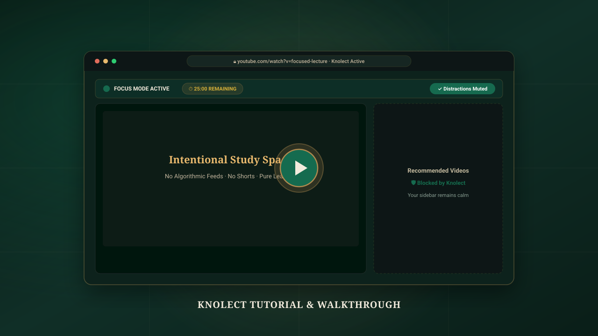

Install Knolect
Turn YouTube into an intentional, distraction-free study space. Add the extension to your desktop browser in seconds.
The Knolect extension build is verified, packaged, and prepared for Chrome Developer Dashboard submission. Pre-register for release notification or test locally below.
⚙️ Developer Mode: Load Unpacked for Local Testing
If you are testing the source code directly or contributing to Knolect development, you can load the extension unpacked:
- In your browser, navigate to
chrome://extensions/(oredge://extensions/). - Toggle Developer mode in the top-right corner to ON.
- Click Load unpacked in the top-left toolbar.
- Select the
extensiondirectory in this repository root.
Note for regular users: consumer installation will be completed in one click via the Chrome Web Store button above once Google's review is finalized.
See Knolect in Action
Learn how to turn YouTube into a focused learning space in just a few minutes.

youtubeVideoId (e.g. your unlisted YouTube link ID) or hostedVideoUrl in website/js/config.js. The player uses privacy-conscious lazy loading with zero tracking requests until play is pressed.
How to Use Knolect
A step-by-step walkthrough of the genuine focus features built directly into the extension.
Install from Chrome Web Store 1-Click Setup
Click "Add to Chrome" on the official store listing. Chrome will verify the package and activate Knolect instantly. No registration, login, or tracking permissions required.
Pin the Extension for Quick Access Browser Toolbar
Click the puzzle piece icon (🧩) in your browser toolbar, find Knolect, and click the pin icon. This gives you instant 1-click access to the Focus Control Center while watching any lecture.
Open YouTube & Notice the Calm Auto-Activate
Navigate to youtube.com. Knolect’s content engine immediately engages, stripping out algorithmic feeds and displaying your intentional search and learning portal.
Activate Focus & Learning Controls Core Engine
Click the Knolect icon to open your Focus Control Center. Enjoy these verified capabilities:
Configure Settings & Review Your Focus Center Private Dashboard
Right-click the Knolect icon and select Options (or click Settings → Focus Center Dashboard in the popup). Review your personal focus telemetry—total hours studied, distractions filtered, and manage your allowed channels securely on your local device.
Frequently Asked Questions
Clear answers about installing Knolect, browser permissions, and privacy.
*://*.youtube.com/* exclusively to hide distracting visual elements (such as recommendation sidebars, algorithmic feeds, shorts carousels, and comments) on the page. All element modifications occur 100% on your machine. Knolect has zero access to your external browsing history or accounts.
chrome.storage.local) on your own computer.